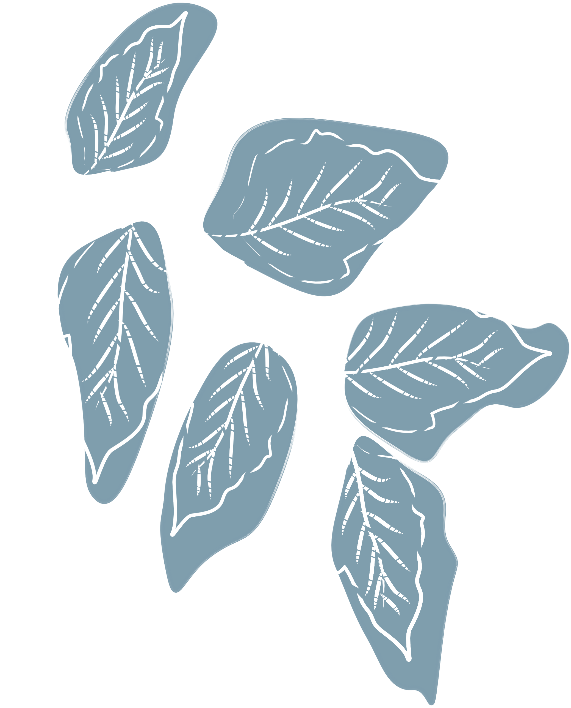
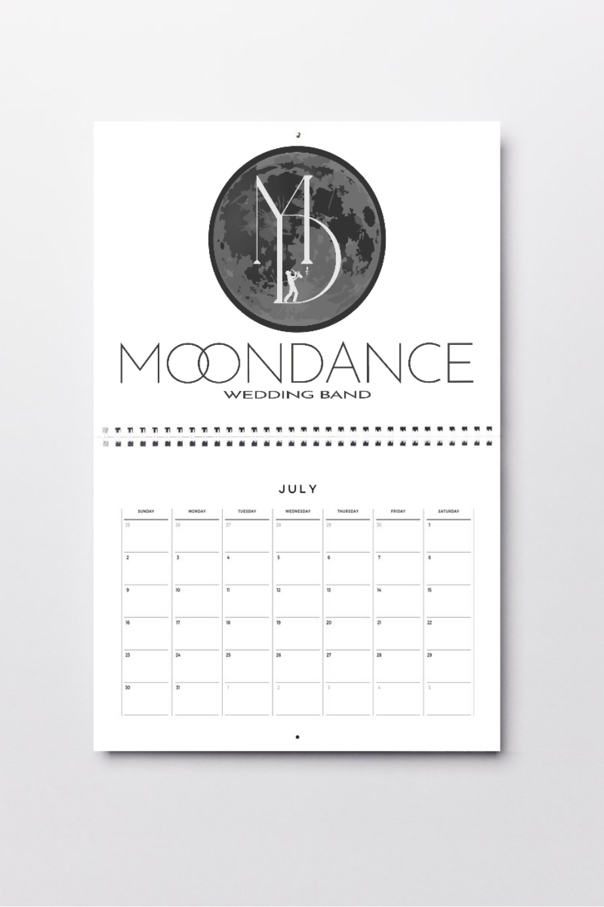

REMIND
UX case study · Web App · Serious Games

Laureata in Informatica Umanistica – Grafica, Interattività e Ambienti Virtuali presso l’Università di Pisa. Subito dopo la laurea, ho lavorato al CNR di Pisa su serious games, interazione uomo–macchina e progetti di ricerca user-centered.
Oltre al design e allo sviluppo frontend, mi occupo di fotografia, musica, video e montaggio video, attività che mi permettono di esprimere la mia creatività in modi diversi e di arricchire le mie competenze nel campo del design.
In questa sezione ho raccolto alcuni dei miei lavori: dai siti web per il mondo della musica ai progetti di grafica vettoriale e branding. Mi piace sperimentare con strumenti diversi per trovare la soluzione visiva più adatta a ogni progetto.

